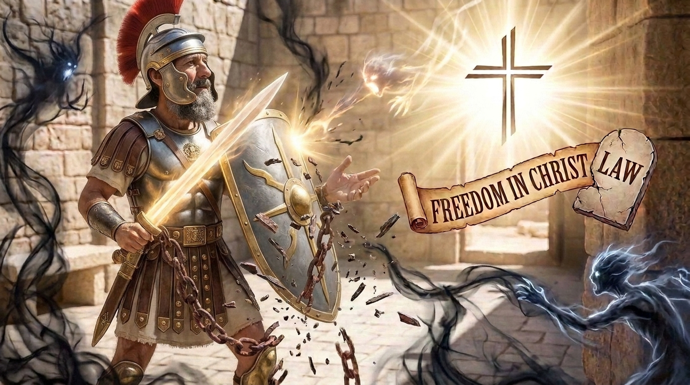

A Riqueza em Cristo e a Armadura de Deus
A Carta aos Efésios é um dos textos mais profundos sobre o propósito eterno de Deus para a Igreja. Escrita por Paulo enquanto estava na prisão, a carta não foca em corrigir problemas específicos, mas em revelar a grandeza do que Cristo fez. Paulo divide a carta em duas partes: a primeira mostra a nossa nova identidade espiritual e as bênçãos celestiais que temos em Cristo (graça); a segunda parte ensina como devemos viver na prática essa nova identidade, destacando a unidade entre os irmãos, os relacionamentos familiares e a famosa descrição da "Armadura de Deus" para a batalha espiritual.
Neste estudo:
Ficha Técnica
- Autor: O apóstolo Paulo.
- Tema Principal: A união da Igreja como o corpo de Cristo, a salvação pela graça e a preparação para a batalha espiritual.
- Versículo-Chave: "Pois vocês são salvos pela graça, por meio da fé, e isto não vem de vocês, é dom de Deus; não por obras, para que ninguém se glorie." (Efésios 2:8-9)
Estrutura
- As riquezas e bênçãos espirituais em Cristo (Caps. 1-3)
- A unidade e o novo estilo de vida do cristão (Caps. 4-5:20)
- Relacionamentos familiares e profissionais submissos a Deus (Caps. 5:21-6:9)
- A Armadura de Deus e saudações finais (Cap. 6:10-24)
🎥 Aprofunde seu estudo
Deseja conhecer mais sobre a Carta aos Efésios?
Assista ao vídeo oficial do BibleProject Português.
Continue sua jornada:
- Próximo Livro ➡️ Ler Filipenses
- Anterior 📖 Ler Gálatas
Apoie este projeto 🌱
Se este estudo foi útil, considere apoiar a manutenção do site.
Chave PIX (Celular):
marcosmontanari2@gmail.com